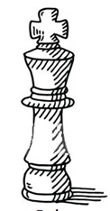

Başarılarımız
- 29 EKİM SATRANÇ TURNUVASI:2012
- 10 KASIM SATRANÇ TURNUVASI:2012
- EDİRNE'NİN KURTULUŞU SATRANÇ TURNUVASI
- EDİRNE KÜÇÜKLER SATRANÇ İL BİRİNCİLİĞİ:2012
- 21 ARALIK ATATÜRK'ÜN EDİRNEYE GELİŞİ SATRANÇ TURNUVASI
- ÖDÜLLÜ SATRANÇ GELİŞİM TURNUVASI
- OKUL SPORLARI SATRANÇ İL BİRİNCİLİĞİ
- ÇOCUK LİGİ TAKIM SATRANÇ TURNUVASI:2013
- VERGİ HAFTASI SATRANÇ TURNUVASI:2013
- ŞEHİTLER HAFTASI SATRANÇ TURNUVASI:2013
- İLKBAHAR SATRANÇ TURNUVASI:2013
- EDİRNE İL BİRİNCİLİĞİ:2013
- KADINLAR İL BİRİNCİLİĞİ:2014
- KADINLAR İL BİRİNCİLİĞİ:2014-İSTANBUL
- UKD SATRANÇ TURNUVASI:2014
- YILDIZLAR İL BİRİNCİLİĞİ:2015
- Vergi Haftsı Satranç Turnuvası
- IV. Geleneksel Sevinç Sinecikli Anma Satranç Turnuvası
- 19 Mayıs Gençlik Kupası Satranç Turnuvası - Eyüpsultan
- OKUL SPORLARI İL BİRİNCİLİĞİ
- KADINLAR İLÇE BİRİNCİLİĞİ:2017
- YILDIZLAR TAKIM İL BİRİNCİLİĞİ:2017
- YILDIZLAR TAKIM İL BİRİNCİLİĞİ:2017
- 2018:AVCILAR İLÇE BİRİNCİLİĞİ SATRANÇ TURNUVASI
- 2018:TÜGVA İstanbul liseler Arası Satranç Turnuvası
- 2018:Süleymanpaşa Belediyesi IV. Rodostoşah Satranç Turnuvası A KATEGORİSİ
- 2018:BJK Satranç Okulu 2. Satranç Turnuvası:18 Yaşaltı Kategorsi 2
- 2018-2019 İstanbul Yıldızlar İl Birinciliği:18 KIZLAR İL 1.
- 2019-Küçükçekmece Belediyesi Cumhuriyet Kupası Satranç Turnuvası
- 2020 Silivri belediyesi online satranç Turnuvası 3.
- 2021 Edirne kadınlar satranç il 1.
- 2022 Edirne ukd satranç turnuvası 1.
- GENÇLER İL BİRİNCİLİĞİ:2015-İSTANBUL DERECESİ
- EDİRNE UNEXCO SATRANÇ TURNUVASI:2015
- YILDIZLAR İL BİRİNCİLİĞİ:2016
- Dünya Düşünce Günü Satranç Turnuvası:2022
- Karnemizi Aldık Satranç Turnuvası.2022
Uluslararası Başarılar
- 2013-KARAMAN-TÜRKİYE ÇOCUK SATRANÇ LİGİ 2013-DENİZLİ
- TÜRKİYE KULÜPLER ŞAMPİYONASI
- 2014-HATAY ULUSLARARASI HATAY FESTİVALİ SATRANÇ TURNUVASI
- 2015-KONYA TÜRKİYE YILDIZLAR SATRANÇ ŞAMPİYONASI
- 2015-HATAY ULUSLARARASI SATRANÇ TURNUVASI
- 2016:III. Uluslararası İstanbul Açık Satranç Turnuvası
- 2016-ANTALYA TÜRKİYE YILDIZLAR SATRANÇ ŞAMPİYONASI
- 2016-2017 Türkiye Satranç İkinci Ligi-KONYA
- 2017-2018 TÜRKİYE YILDIZLAR SATRANÇ ŞAMPİYONASI
- 2017-2018 TÜRKİYE YILDIZLAR SATRANÇ ŞAMPİYONASI
- 2017-2018 TÜRKİYE YILDIZLAR SATRANÇ ŞAMPİYONASI
- 2017-2018 Türkiye Kulüpler Satranç Şampiyonası
- 2017:V. Çeşme Uluslararası Açık Satranç Turnuvası B KATEGORİSİ
- 2017:XVI. İzmir Uluslararası Açık Satranç Turnuvası
- 2017:Uluslararası İstanbul Açık Satranç Turnuvası
- 2018 :Uluslararası İstanbul Açık Satranç Turnuvası
- 2018:VI. Çeşme Uluslararası Açık Satranç Turnuvas
- 2018-2019 Türkiye Kulüpler Şampiyonası
- 2019:Başkent Üniversitesi Uluslararası Açık Satranç Turnuvası
- 2019: Uluslararası İstanbul Açık Satranç Turnuvası - Sarıyer B KATEGORİSİ
- 2019 TÜRKİYE YILDIZLAR SATRANÇ ŞAMPİYONASI
- 2019-KONYAALTI BELEDİYESİ ULUSLARARASI SATRANÇ TURNUVASI B KATEGORİSİ
- 2022 Türkiye kadınlar satranç Şampiyonası
- 2022 Türkiye Kulüpler Satranç Şampiyonası
- 2022 uluslararası istanbul open